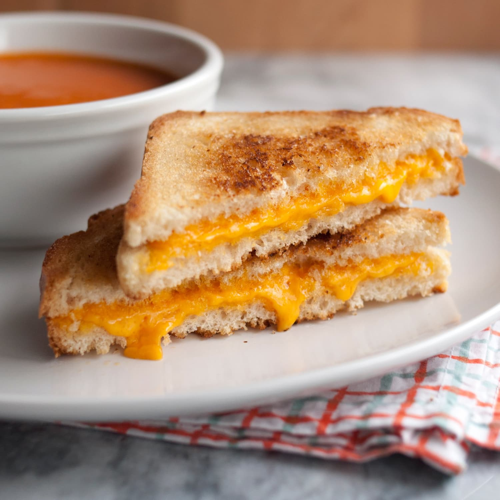

Supreme Grilled Cheese Sandwich

Description
A simple and exquisite dish to make at home, especially for cheese lovers.
Ingredients
- Bread slices (You can get it from a loaf of bread, we will use 2 slices for a sandwich)
- Cheese slices (You can buy a whole piece of cheese and grate/slice it on your own)
- Butter (optional)
Steps
- Place two cheese slices in between two bread
- (Optional) Put a small chunk of butter in the pan and turn on low heat
- Put the sandwich in the pan and turn on medium heat
- After a few minutes, flip the sandwich (we want the side that is being heated to be very slightly 'burnt')
- Lower the heat to low heat (the pan should be quite hot now and we want the cheese to melt but not burn the bread)
- After a few minutes, voila, you have a supreme tasty grilled-cheese sandwich!